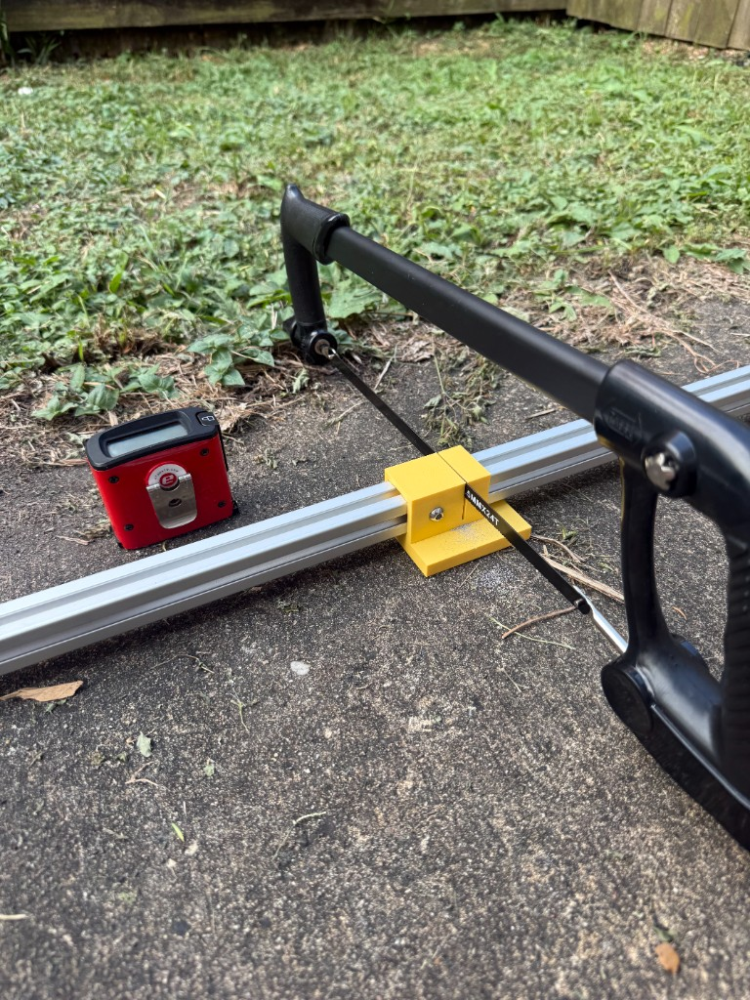
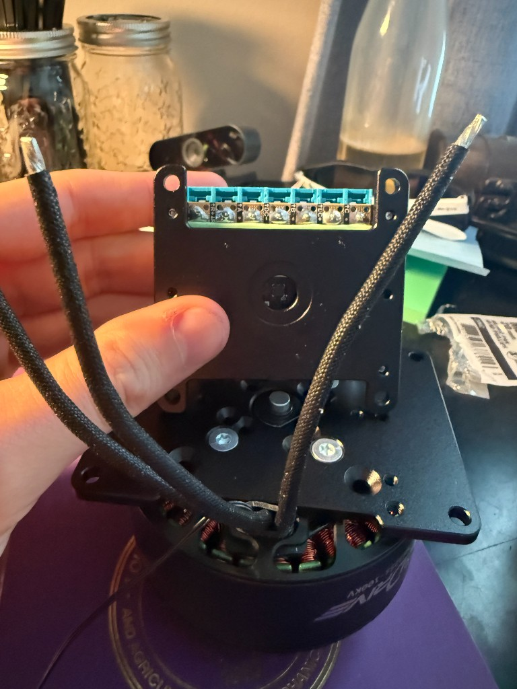
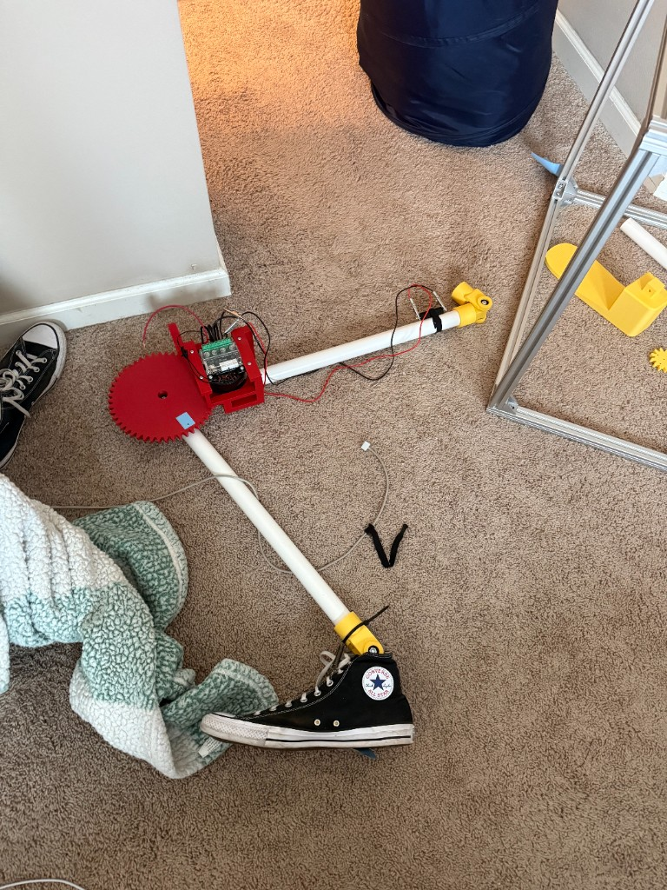
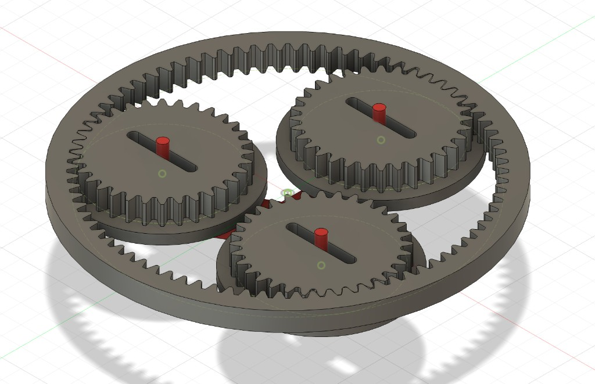

Overview
Scope
The goal of this project is to develop a robotic leg test platform to perform experiments on various actuation and control systems. This project is entirely self funded and independent. I had the ideas back in August of 2025 and have recently had the funds to start developing it. Additionally, I have had a lot of success using the AI Cursor to help me develop programs for projects either faster or better than my skill level allows, but so far in this project I have been doing everything on my own to push myself to get more comfortable with programming.
Planned Experimental Goals
-
Test Passive and Active Adaptive Transmissions' Efficiency Compared to
Traditional Drive Trains By Attempting to Keep Motors at More Consistent
Operating Conditions Throughout the Gait
- The plan is to use a modified version of a Zero Ratio-like CVT for passive adaptivity, and a Toyota Planetary CVT inspired system for active adaptivity
- Take my experience with computer vision, specifically MediaPipe, and see how well I can create teleoperation based on my own legs motion caught on camera
-
Experiment with non-constant center of rotation at the knee joint (like a
real human knee) to see if it meaningfully produces a gait more similar to
that of a human.
- Not many walking robots I see include this, and I think it could meaningfully produce a gait that looks less robotic / falling forward
Notes
I haven't done any theoretical analysis because this isn't academically, professionally, or monetarily motivated, and I want to see how the results come out. I plan to create those to compare the findings to, at least the first experimental goal, but this is largely a learning exercise for me because it is something I want to do.
Media



